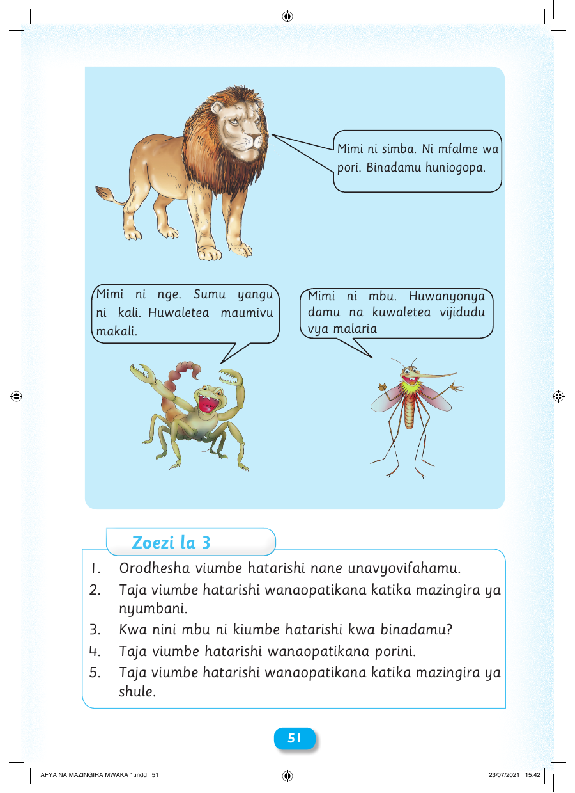

Mimi ni simba. Ni mfalme wa pori. Binadamu huniogopa. Mimi ni nge. Sumu yangu Mimi ni mbu. Huwanyonya ni kali. Huwaletea maumivu damu na kuwaletea vijidudu makali. vya malaria Zoezi la 3 1. Orodhesha viumbe hatarishi nane unavyovifahamu. 2. Taja viumbe hatarishi wanaopatikana katika mazingira ya nyumbani. 3. Kwa nini mbu ni kiumbe hatarishi kwa binadamu? 4. Taja viumbe hatarishi wanaopatikana porini. 5. Taja viumbe hatarishi wanaopatikana katika mazingira ya shule. 5511 AFYA NA MAZINGIRA MWAKA 1.indd 51 23/07/2021 15:42